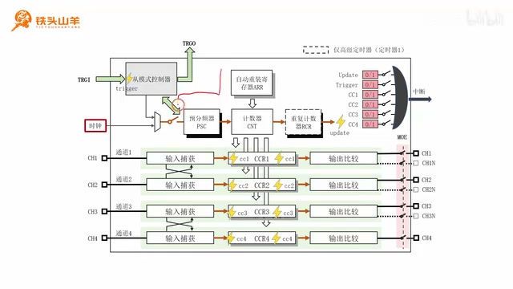
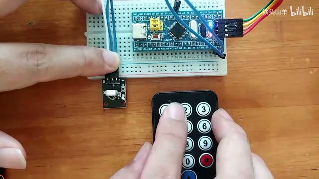
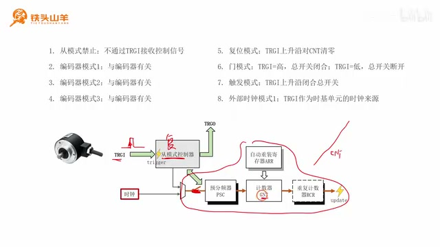
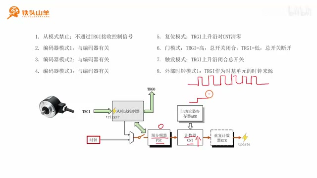
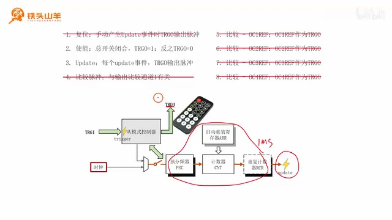
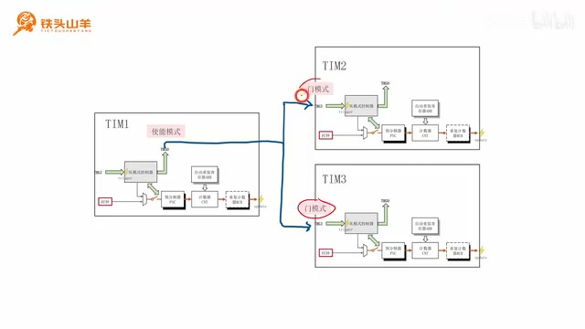
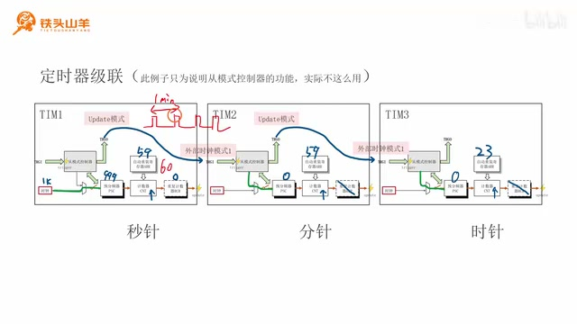

P046 · 9.7 （定时器）从模式控制器¶
9.7 [定时器]从模式控制器¶
各位同学大家好，我是铁头山羊。今天学习第九章第七节，也是定时器的最后一部分——从模式控制器。本套视频所需材料都在开发套件包里；请大家扫描屏幕上的二维码，到淘宝店铺购买套件。购买后可以获得课程所有课件和源码，还可以加入答疑群和我直接交流。
为了定位从模式控制器在定时器中的位置，我们先回顾一下定时器内部结构框图。为了便于学习，我以前把框图分成四部分：上面的实际单元、右边的输出比较、左边的输入捕获，以及左上角的从模式控制器。本节我们讲最后这一部分，它也是定时器内容的最后一部分；学完后整个定时器就基本讲完了。
本视频分五部分：先讲什么是从模式控制器，让大家有基本了解；第二、第三部分分别讲八种从模式和八种主模式；第四、第五部分我们举两个例子，看从模式控制器在实际过程中如何使用。画面目录把第四项列为“定时器同时启停”，第五项列为“定时器级联”；下面先讲同时启停，再讲级联。
从模式控制器由什么组成¶
为了回答什么是从模式控制器，我们再看定时器基本结构框图左上角。框图中间是从模式控制器本身，周围有三个箭头：左边是输入箭头 TRGI，右边是输出箭头 TRGO，下面是它和实际单元之间的双向箭头，表示两者相互作用。只要理解 TRGI 和 TRGO 的含义，就能解释从模式控制器。

定时器内部结构框图中，左上角的从模式控制器通过 TRGI 接收输入，向上输出 TRGO，并与下方实际单元交互。 · 原片 00:42
回到刚才的定时器框图，我们再看从模式控制器周围的箭头：最中间代表控制器本身，一共有三个箭头，其中最左边是输入箭头 TRGI，右边是输出箭头 TRGO；下面的箭头是双向的，表示从模式控制器与下方实际单元之间相互作用，因为作用是相互的，所以用双向箭头表示。
为了说明 TRGI、TRGO 的作用，我们先看红外遥控器这个例子。开发套件中的遥控器可以分为遥控器本身和红外接收头两部分。使用时把接收头连接到单片机，再用遥控器向接收头发命令；单片机通过接收头收到命令后，就按指定命令做对应动作。
我专门写了一段小程序来演示：红外接收头已经接到单片机上，遥控器用来控制板载 LED 点亮或熄灭。按遥控器上的“1”，观察板载 LED 点亮；按“2”，板载 LED 熄灭。这个很简单的小实验说明可以通过遥控器控制板载 LED 的亮灭。

遥控器和红外接收头连接到单片机的演示画面，用按键控制板载 LED 的亮灭。 · 原片 03:45
有了这个例子，接下来就可以解释什么是 TRGI、什么是 TRGO。我们先看左边的 TRGI。
TRGI 是英文 Trigger Input 的缩写：Trigger 代表“触发”，Input 代表“输入”，因此 TRGI 是从模式控制器的触发输入。它就相当于刚才的红外接收头，可以接收命令，从而控制下面的实际单元执行指定动作。例如，有的命令可以控制开关导通或断开；有的命令可以让计数器 CNT 清零；还有的命令可以让 CNT 递增或递减。把 TRGI 理解成红外接收头即可。
再看 TRGO，它是 Trigger Output 的缩写，Output 代表“输出”，所以 TRGO 是从模式控制器的触发输出，作用正好与 TRGI 相反。刚才把 TRGI 比作接收头，现在可以把 TRGO 比作遥控器，通过它向外发送命令。比如用它控制另一个定时器做对应动作；一个定时器控制另一个定时器，这就叫定时器级联。
TRGO 还可以控制别的模块，例如下一章要学习的 ADC。可以使用 TRGO 输出信号控制 ADC 的采样时机。总之，把 TRGO 理解成能够发送命令的遥控器即可。由此可知，从模式控制器就是红外接收头和红外遥控器的集合：既能通过 TRGI 输入控制信号，控制定时器实际单元，又能通过实际单元的状态向外发送控制信号，去控制别的模块。这就是本节所说的从模式控制器。
八种从模式¶
接下来介绍八种从模式和八种主模式，我们先看从模式。所谓从模式，就是刚才“接收头”的功能，也就是通过 TRGI 接收控制信号，控制实际单元做相应动作。因为定时器现在是被控对象，所以称为从模式。八种从模式表示从 TRGI 输入的八种不同信号；根据这八种信号，实际单元会做八种不同动作。
八种模式依次是从模式禁止、编码器模式 1、编码器模式 2、编码器模式 3、复位模式、门模式、触发模式和外部时钟模式 1。虽然模式很多，但每一种的用法其实都很简单，下面逐种来看。
第一种是从模式禁止：不使用 TRGI，也就是把红外接收头关闭。这时不论从 TRGI 输入什么信号，实际单元都不受影响。默认情况下就是从模式禁止。
下面三种模式是编码器模式 1、2、3，顾名思义都和编码器有关。
编码器是电机控制过程中需要用到的一种传感器，可以测量电机转过的角度，也可以测量角速度。这里展示一个编码器，可以把它接入定时器，再通过从模式控制器控制计数器 CNT 对编码器进行计数。关于编码器模式，后续我会安排实验，所以这三种模式本节先不深入讲。
第五种模式是复位模式。在这种模式下，当 TRGI 上输入一个上升沿，就会把计数器 CNT 的值清零，也就是把寄存器的值清零。举例来说，先把从模式控制器设置成复位模式，然后闭合开关；闭合后实际单元开始工作，可以看到 CNT 的值开始递增。在 CNT 递增过程中，假设 TRGI 输入一个脉冲，脉冲的这个位置是上升沿；收到上升沿后，从模式控制器就对 CNT 清零，因此看到相应的计数波形。

画面列出八种从模式，并在下方定时器框图中标注 TRGI 输入路径和相关单元，红笔圈出了计数链路。 · 原片 09:22
第六种模式是门模式。在门模式下，如果通过 TRGI 输入高电压，下方开关就闭合；输入低电压，开关就断开。例子中先将从模式控制器设置成门模式，再通过 TRGI 输入信号。最开始输入低电压，所以开关断开，CNT 的值保持不变；接着输入高电压，开关闭合，后面的实际单元开始工作，CNT 的值开始递增。
CNT 递增一段时间之后，TRGI 又变成低电压，这表示开关再次断开，所以 CNT 的值保持不变。可以看到，只有中间 TRGI 为高电压时，计数器才会工作；这就是门模式。
接下来是第七种触发模式，也用来控制下面的开关。刚才的门模式是用高、低电压控制开关导通或断开；触发模式则是用一个上升沿来闭合开关。例子中把从模式控制器设置成触发模式，再通过 TRGI 输入信号。假设开始时开关断开，TRGI 上输入上升沿后，开关就闭合；从这一点开始，CNT 开始计数，这就是触发模式。
第八种也是最后一种模式，叫外部时钟模式 1。在这种模式下，把 TRGI 信号作为实际单元的时钟来源。过去讲实际单元时，一直认为它的时钟来自时钟树；其实还可以通过 TRGI 输入时钟信号，再把这个信号作为实际单元的时钟来源。比如把从模式控制器设为外部时钟模式 1，通过 TRGI 输入时钟信号，并把预分频器 PSC 的值设为 0。
计数方向设成向上计数。这样 TRGI 每输入一个脉冲，计数器 CNT 的值就增加 1，出现对应波形。以上就是八种从模式。它们有一点抽象，理解起来有些困难，但不必担心，稍后我会举两个例子，更清楚地展示具体用法。

外部时钟模式 1 将 TRGI 上的每个输入脉冲作为计数时钟，使向上计数的 CNT 每个脉冲增加 1。 · 原片 12:19
八种主模式¶
第三部分是八种主模式。所谓主模式，就是通过 TRGO 输出控制信号去控制别的模块，相当于遥控器的功能。此时定时器控制别的模块，所以称为主模式。主模式也有八种，不过我们只需要学其中两种，因此比从模式简单一些。
先看第一种，叫使能。把从模式控制器的主模式设置成使能后，TRGO 输出就和下面的开关有关：开关断开时，TRGO 输出低电压，也就是 0；开关闭合时，TRGO 输出高电压，也就是 1。因此 TRGO 上的输出电压反映开关处于闭合还是断开的状态。
再看下面一种，叫 Update 模式。从它的名字就可以看出，这种模式和实际单元的 Update 事件有关。把从模式控制器设置成 Update 模式之后，每当实际单元产生一个 Update 事件，TRGO 就向外输出一个脉冲。举例说，把实际单元设成每 1 毫秒产生一次 Update 事件，那么 TRGO 上输出的就是以 1 毫秒为间隔的一系列脉冲；每个 Update 事件都会产生一个脉冲。

Update 模式中，实际单元每产生一次 Update 事件，TRGO 就向外输出一个脉冲；示例间隔为 1 毫秒。 · 原片 14:23
定时器同时启停的例子¶
刚才我们已经学了八种从模式和八种主模式，但理解起来可能还有一些困难，下面用两个例子再看这些模式如何使用。第一个例子是定时器同时启停：假设现在有三个定时器，希望三个定时器同时启停，也就是让这三个开关同步动作。当前面定时器的开关闭合，后面两个开关也跟着闭合；当前面断开，后面两个也跟着断开。
实现方法是把前面的定时器 TRGO 设为使能模式，把后面两个定时器 TRGI 都设为门模式，然后把前一个定时器的 TRGO 和后面两个定时器的 TRGI 连接起来。接下来分析在这种连接下，如何实现同时启停。

三个定时器同时启停的连接：前级 TRGO 设为使能模式，连接至后两级设为门模式的 TRGI。 · 原片 15:37
先分析前面的定时器：它的 TRGO 被设成使能模式，也就是根据下方开关状态决定 TRGO 输出信号。开关断开时 TRGO 输出低电压，开关闭合时 TRGO 输出高电压。
再分析后面两个定时器：它们的 TRGI 设成门模式。门模式使用 TRGI 输入电压控制开关导通或断开，TRGI 输入低电压时开关断开，输入高电压时开关闭合。因此当前面开关闭合时，TRGO 输出高电压，后面的 TRGI 接收到高电压，开关就闭合；当前面开关断开时，信号输出低电压，后面的开关也断开。这样就实现了三个定时器的开关同时启停。
定时器级联的例子¶
讲完同时启停，再看定时器级联的例子。过去讲实际单元时，我们把 CNT 比作手表的秒针；不过手表除了秒针之外，还有分针和时针。所以接下来用三个定时器分别模拟秒针、分针和时针：秒针每秒跳一次，转一圈是 60 秒；分针每分钟跳一次，转一圈是 60 分钟；时针每小时跳一次，转一圈是 24 小时。下面先看最左边的定时器。
假设最左边这个定时器输入的时钟信号来自时钟树，频率比较低，设为 1 kHz。对这个 1 kHz 信号进行 1000 分频，得到 1 Hz 时钟信号，驱动 CNT 每一秒增加 1，相当于秒针每秒跳一下。再把自动重装寄存器 ARR 的值设为 59，模拟秒针每跳一圈是 60 秒。
CNT 每跳一圈是 60 秒，也就是每分钟溢出一次。由于重复计数器设置为 0，每溢出一次就产生一个 Update 事件，因此每分钟产生一个 Update 事件。接下来把这个定时器的 TRGO 设置成 Update 模式。前面讲过的 Update 模式是：每当实际单元产生一个 Update 事件，TRGO 上就会输出一个脉冲。对这个定时器来说，TRGO 输出的是以一分钟为间隔的脉冲信号。
有了这个脉冲信号之后，把 TRGO 连接到第二个定时器的 TRGI，并把第二个定时器的 TRGI 设置成外部时钟模式 1。外部时钟模式 1 就是把 TRGI 输入信号作为后面实际单元的时钟源。在这个例子中 PSC 设为 0，也就是说左边每输入一个脉冲，CNT 的值就增加 1。脉冲间隔是一分钟，所以这个 CNT 每分钟增加 1，模拟分针。

秒针定时器每分钟从 TRGO 输出一次 Update 脉冲，连到中间定时器的 TRGI，作为分针计数器的外部时钟。 · 原片 19:35
对于中间这个定时器，把自动重装寄存器 ARR 的值设置为 59，也就是说分针每 60 分钟溢出一次，这里的 Update 事件每小时发生一次。再把中间定时器的 TRGO 设置成 Update 模式，它就向外输出一系列以一小时为间隔的脉冲信号。这个脉冲又作为第三个定时器的时钟源，输入后面的实际单元去驱动时针。这样就实现了定时器级联。这个例子只是为了说明从模式控制器的功能，实际并不这样使用。
以上就是本期视频的全部内容。本期我们简单了解了从模式控制器的基本工作原理。虽然本期视频比较简单，但对后续学习非常重要，因此大家要仔细理解从模式控制器的使用方法。后续两期视频会安排两个实验，让大家进一步了解从模式控制器在实际编程时应当如何使用。本期视频内容到这里结束。我是铁头山羊，让我们下期视频再见。